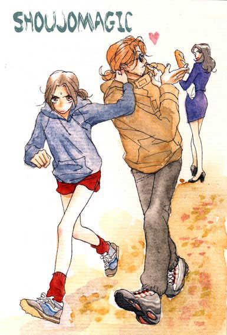

The MMM
Baby Pop

-
Alternative Names: Beibii Poppu
Author(s): Ogawa Yayoi
Genres: Comedy, Drama, Josei, Slice of Life
Release: 1998
Status: Complete
Type: Manga
Length: 2 Volumes 11 Chapters
Read Online @:

More Info @:

Notes
A weird story about a girl and her new step-father. Her mom and Ryu got married and on their honeymoon the mom got into a car accident and died leaving Ryu and her daughter Nagisa. So we see how the two of them seurvive eachother... Nagisa being the honor roll student and Ryu being a playboy photographer hiting on all women. How will they survive?